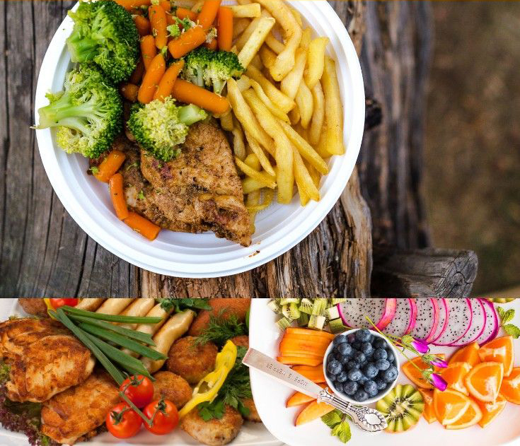

Mẹ sẽ tràn trề sữa, nếu như-…
1. Ăn đủ năng lượng
Mẹ cho con bú cần thêm 500 kcal mỗi ngày so với nhu cầu năng lượng bình thường. Một ly sữa dành cho bà bầu có khoảng 150 kcal, 100g thịt bò bít-tết có khoảng 190 kcal, 1 quả trứng có khoảng 70 kcal. Để bổ sung thêm năng lượng, ngoài 3 bữa ăn chính mẹ sữa có thể ăn thêm 2 bữa dặm bằng bánh ngọt, chè đậu, trứng luộc, sữa…Nếu bình thường mẹ kén ăn thì bây giờ phải chịu khó siêng nạp thêm năng lượng để có thể đủ sữa cho bé nha! Ăn uống đủ năng lượng cũng sẽ giúp mẹ tươi tỉnh, khoẻ khoắn và vui vẻ, có sức để mà thức đêm chăm sóc bé yêu nữa.
2. Ăn đạm nhiều hơn bình thường
|
 |
Ăn ít đạm sẽ làm lượng sữa giảm. Người Việt Nam có thói quen ăn nhiều tinh bột (cơm, bánh canh, hủ tiếu…) mà ít đạm (thịt, cá). Thỉnh thoảng, có mẹ sữa “bị ép” ăn cơm với cá kho mặn, thịt kho tiêu nên ăn càng ít thịt. Lại còn tập quán kiêng thịt bò nếu sinh mổ nữa! Những tập quán kiêng cữ đó vừa không khoa học vừa làm cho lượng sữa ít đi. Mẹ sữa có thể ăn tất cả các món ăn thông thường để đảm bảo lượng đạm cần thiết như cá chiên, thịt luộc, thịt nướng, thịt ram, thịt xào…Chỉ cần kiêng thịt tái, thịt sống thôi!
3. Không cần ăn quá nhiều chất béo mà cần chọn lựa chất béo có ích cho em bé
Các nhà khoa học đã so sánh các bà mẹ ăn nhiều chất béo và ăn ít chất béo thì thấy tổng lượng chất béo trong sữa mẹ vẫn gần giống nhau. Ăn nhiều chất béo không làm tăng lượng sữa mẹ. Vậy nên mẹ sữa không cần ngày nào cũng ăn chân giò mà chỉ cần ăn bình thường những món chiên xào thông dụng, uống sữa. Mẹ cho con bú nên chọn ăn các loại cá biển, nhất là cá hồi, cá trích và các loại hạt, trái bơ để tăng DHA và ARA trong sữa mẹ. Hai loại chất béo này rất cần thiết để phát triển hệ thần kinh và mắt cho bé.
4. Uống nước nhiều cũng giúp tăng lượng sữa mẹ
Mẹ sữa cần uống ít nhất 3 lít nước mỗi ngày. Bận bịu và mệt mỏi hay làm mẹ quên uống nước. Vì vậy, cần để nước uống ở nhiều nơi trong nhà và cứ rảnh là đi uống nước, không đợi khát mới uống. Mẹ sữa có thể tập thói quen trước khi cho bú và sau khi cho bú là uống 1 ly nước. Ngoài nước chín, mẹ sữa nên uống thêm nước trái cây và ăn thêm trái cây nhiều nước (táo, cam, dưa hấu…) để bổ sung thêm vitamin.
5. Ăn uống không phải là cách duy nhất để tăng lượng sữa mẹ.
Quan trọng nhất là mẹ phải cho con bú thật nhiều lần, sau mỗi lần cho bú phải chịu khó vắt hết sữa còn lại trong 2 vú ra và phải làm việc này đều đặn mỗi 3-4 giờ một lần. Các nhà khoa học đã thử nghiệm thấy dù các bà mẹ cảm thấy con đã bú cạn vú nhưng vẫn thừa sữa trong vú mỗi ngày ít nhất 100 mL. Nếu để ứ lại sữa thừa như vậy, chất ức chế bài tiết sữa có trong sữa mẹ sẽ khoá các tế bào tiết sữa làm giảm bài tiết sữa dần dần. Vắt cạn sữa ra thì các tế bào tiết sữa sẽ vẫn làm việc hết công suất. Vì vậy, các bà mẹ hiến tặng sữa cho Ngân hàng sữa mẹ không lo vắt sữa nhiều sẽ làm giảm sữa dần đâu nha!
6. Điều quan trọng thứ hai là tinh thần của mẹ lúc nào cũng phải vui vẻ, lạc quan và tin tưởng vào khả năng tiết sữa của mình.
Tâm trạng buồn, lo lắng sẽ ức chế việc tiết sữa vì trung tâm điều khiển việc tiết sữa là bộ não, không phải cái vú đâu nha! Điều này không chỉ phụ thuộc mẹ mà còn phụ thuộc vào bố và các thành viên khác trong gia đình. Các mẹ hiến tặng sữa cho ngân hàng sữa mẹ hãy nghĩ đến các em bé sinh non đang trông chờ sữa mẹ hiến tặng và đang khoẻ lên từng ngày nhờ những giọt vàng yêu thương của các mẹ. Cả nhà hãy cùng hỗ trợ và yêu thương mẹ sữa để mẹ lúc nào cũng tràn trề sữa nhé!
Bình luận
(0)